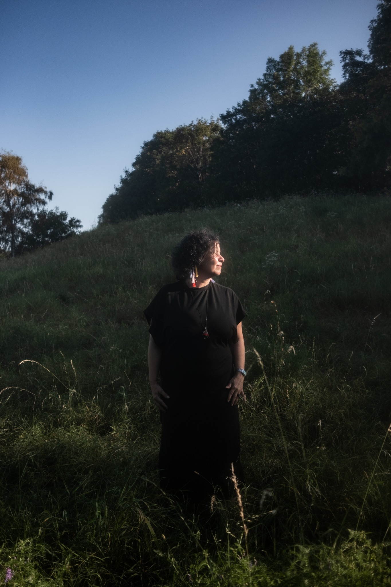
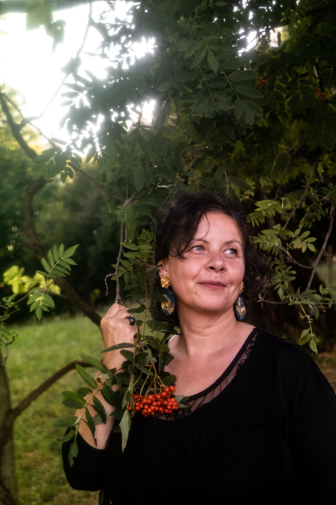
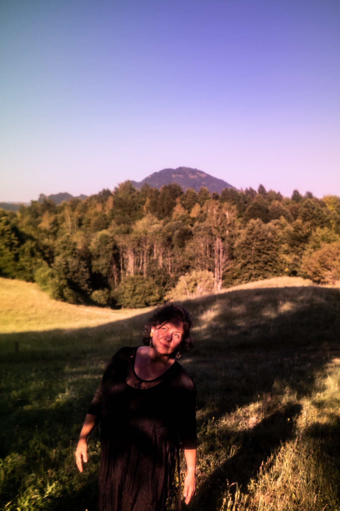

MARINA PIGATO / MARYPIGA -+-=+
Non devi diventare
un’altra persona.
Magari devi solo diventare un po’ più te.
E virare di qualche grado la direzione.
LA LETTURA
Una mappa,
non un verdetto.
Astrologia e Human Design possono essere mappe molto precise. Ma una mappa non è la persona, e soprattutto non è una sentenza.
Le uso per allargare lo sguardo: vedere ciò che nella storia che stai vivendo rischia di diventare troppo stretto, riconoscere risorse e contraddizioni e mettere a fuoco una direzione possibile.
Non per dirti chi sei. Non per prevedere cosa succederà. Non per consegnarti un’altra identità da imparare a memoria.
La mappa orienta.
La vita resta tua.
Mi racconti brevemente cosa ti porta qui. Preparo la mappa e la lettura; poi ci incontriamo per parlarne. Online oppure di persona. Il feedback serve a capire cosa ha davvero risuonato e cosa no.
Nessuna verità definitiva. Nessuna illuminazione garantita. Le mappe sono strumenti di osservazione: le ipotesi si verificano nella realtà.
RACCONTAMI DOVE TI TROVI →
CHI SONO
Marina.
Anche Marypiga.
Ho lavorato per molti anni con le persone, nel sociale e nell’ospitalità. Oggi porto quella stessa attenzione in una forma diversa: ascoltare, osservare, mettere insieme pezzi che sembrano lontani e restituire una direzione leggibile.
Ho due lauree nell’area sociale. Nel tempo ho continuato a studiare filosofia, pratiche contemplative, yoga, astrologia, Human Design e Gene Keys. Sono certificata in Restorative Yoga.
Non penso che tutti questi strumenti dicano la stessa cosa. E non mi interessa farli entrare a forza in un sistema perfetto.
Mi interessa ciò che accade sul crinale: tra spiritualità e pensiero critico, simboli e vita quotidiana, bisogno di capire e libertà di non definirsi completamente.
Capire qualcosa di sé può dare una direzione.
Non deve diventare un’altra gabbia.

IL PRIMO PASSO
Scrivimi.
Raccontami.
Vediamo.
Puoi raccontarmi brevemente cosa ti porta qui oppure mandarmi un audio. Da lì capiamo se una lettura può avere senso.
Niente percorso da comprare in anticipo. Prima viene la domanda.
MARINA PIGATO / MARYPIGA · -+-=+